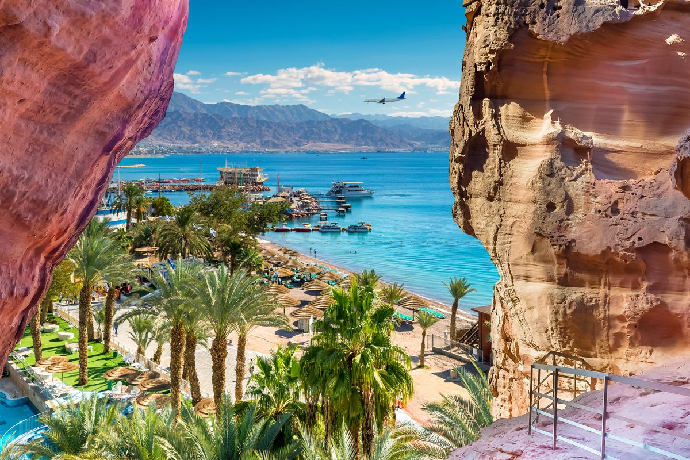

<!DOCTYPE html>
<html>
</html>
<head>
    <title> visit-Jordan</title>
</head>
<body>
    <header>
        <script>
            alert ('Welcome to Jordan')
var TA = prompt ('Enter your name:')

if (TA == "Majd" ) {
    console.log("Hello Majd")
    document.write('Hello Majd')
}
else{
    console.log("Hello visitor")
    document.write("Hello visitor")
}
         var name = 'Israa'
         document.write('This page was done by:' + name)
        </script>
        
    </header>
    <main>
        <h1 style="background-color: aqua;font-style: italic;">Aqaba</style> </h1> 
        
<p style="font-style:italic;">
    <h3>Situated on the southern tip of Jordan, approximately 4 hours from the capital of Amman, Aqaba is a beach town with Jordanian appeal. Equipped with the local watering holes, to water sports, and a historical flair for those looking to revisit the past Aqaba is a delightful complement to the metropolitan appeal of Amman
    Aqaba is a Jordanian port city on the Red Sea's Gulf of Aqaba. Inhabited since 4000 B.C., it's home to the Islamic-era Aqaba Fort. Its beach resorts are popular for windsurfing and other water sports, and the area is a top destination for scuba divers, with notable dive sites including the Yamanieh coral reef in the Aqaba Marine Park, south of the city
</style>
</h3>
    
  
</p>
<ul>
    <p style="font-style: oblique;">Find more :
    </p>
    <li><a href="https://tareqmeg.github.io/Visitjo/">Home</a></li>
    <li><a href="https://tamaraalrashed.github.io/Visit-Jordan/">Wadi Rum </a></li>
    <li><a href="https://asharabuhelweh.github.io/Visit-Jordan/">Petra</a></li>
</ul>
<script>

</script>
    </main>
    <footer>
&copy;Done by Israa Ireqat ASAC at LTUC
    </footer>
</body>